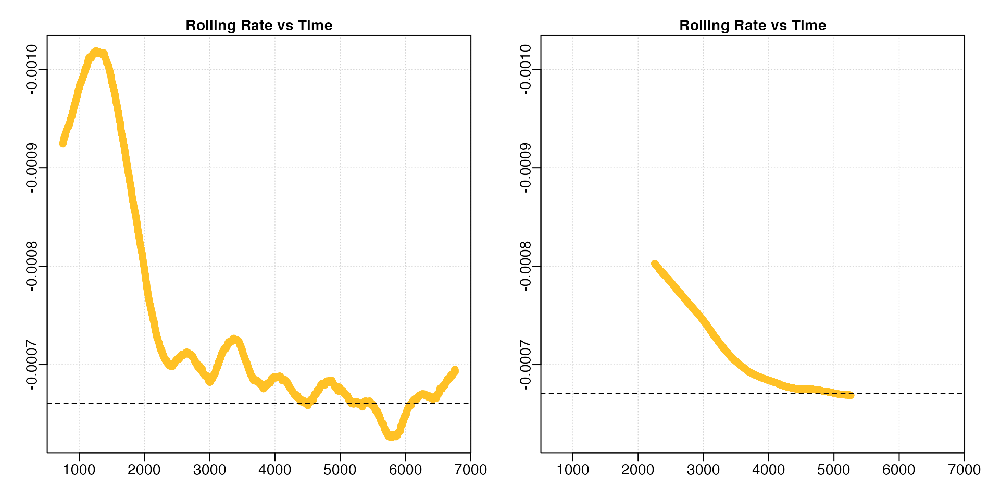
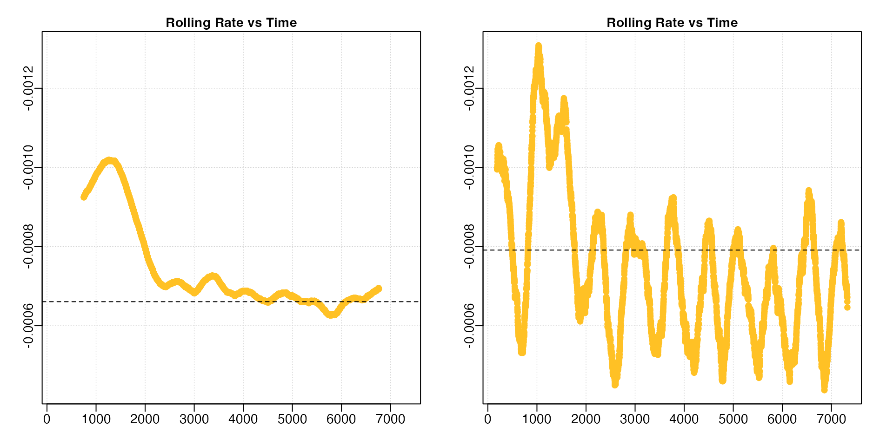
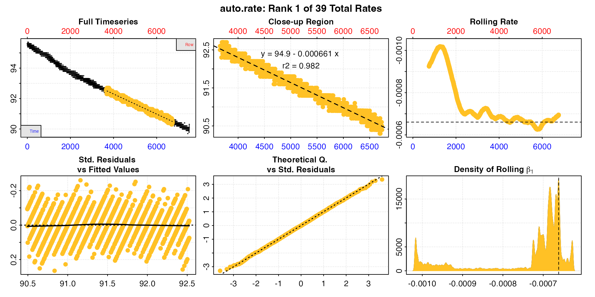
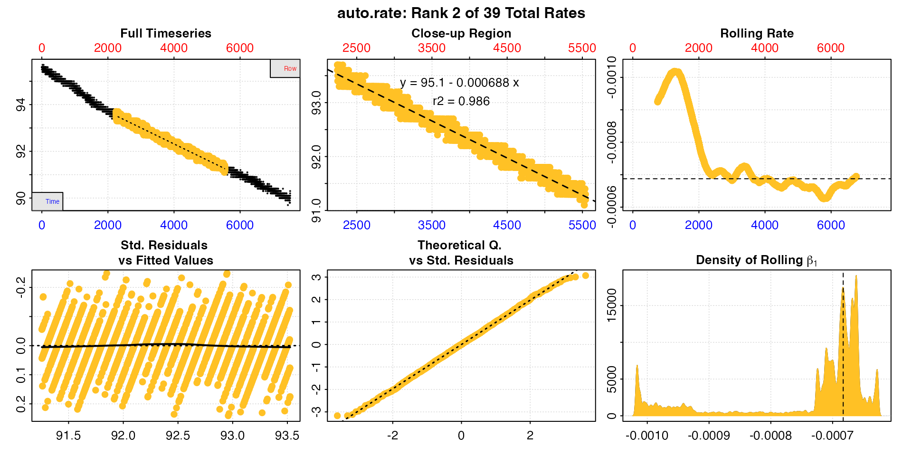
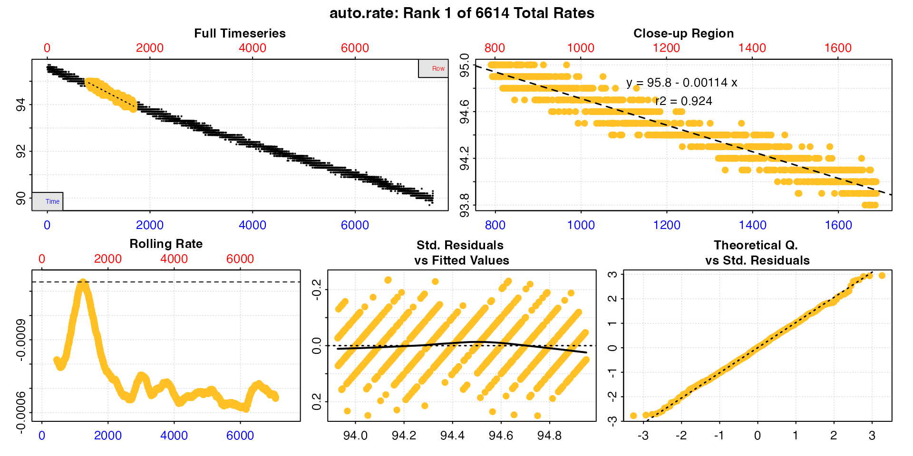
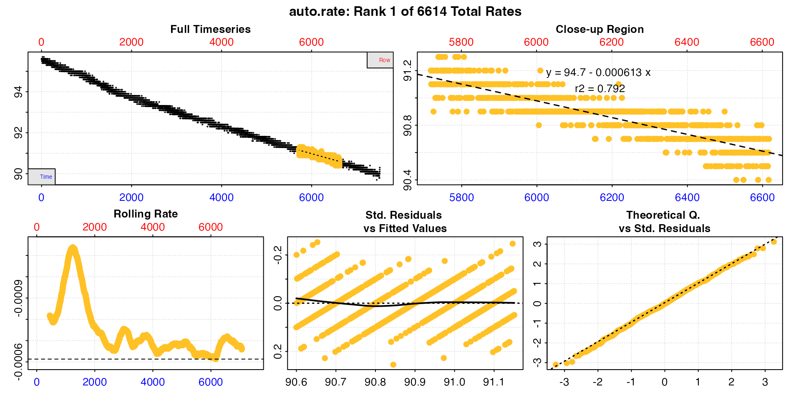
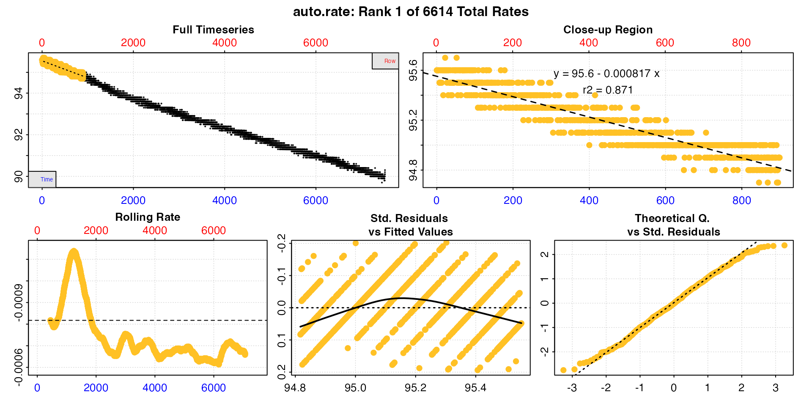

In respirometry, we want to report oxygen uptake or production rates from experimentally important stages or that represent behavioural or physiological states. These include:
Identifying and extracting these rates from large datasets is difficult, and if selected visually, subject to observer bias and lack of objectivity. Methods such as fitting multiple, fixed-width linear regressions over an entire dataset to identify regions of lowest or highest slopes (i.e. rates) is computationally intensive, and slopes found via this method highly sensitive to the width chosen, especially if the specimen’s metabolic rate changes rapidly or the data is noisy.
Here we detail auto_rate(), a function that uses machine
learning techniques to automatically detect the most
linear regions of a dataset. This allows an investigator to
extract rates in a statistically robust, objective manner. It can also
extract and order highest and lowest
rates, or return an unordered rolling rate across the
whole dataset.
In this vignette we detail how auto_rate works, and how
it can be used to extract rates from respirometry data. Importantly,
auto_rate has been optimised to be extremely fast.
Other methods on large datasets can take minutes, hours or even days to
run. auto_rate can reduce this wait by orders of magnitude,
fitting tens of thousands of regressions and detecting linear regions in
seconds.
This illustrates the main processes involved in
auto_rate:
auto_rate works by performing an optimised rolling
regression on the dataset of a specified width. For the
linear method, a kernel density estimate is performed on
the rolling regression output, and the kernel bandwidth used to
re-sample linear regions of the data for re-analysis. For other methods,
the results are filtered, ordered, or returned unordered.
The function auto_rate uses a novel method of combining
rolling regression and kernel density estimate algorithms to detect
patterns in time series data. The rolling regression runs all possible
ordinary least-squares (OLS) linear regressions \((y = \beta_0 + \beta_1 X + \epsilon)\) of a
fixed sample width across the dataset, and is expressed as: \[y_t(n) = X_t(n) \beta (n) + \epsilon_t(n), \ t =
n,\ ...,\ T\] where \(T\) is the
total length of the dataset, \(n\) is
the window of width \(n < T\), \(y_t(n)\) is the vector of observations
(e.g. oxygen concentration), \(X_t(n)\)
is the matrix of explanatory variables, \(\beta (n)\) is a vector of regression
parameters and \(\epsilon_t(n)\) is a
vector of error terms. Thus, a total of \((T -
n) + 1\) number of overlapping regressions are fit.
auto_rate has several methods to process, order or
filter the rolling regression results.
method = "linear"
This method uses kernel density estimation (KDE) to automatically identify linear regions of the dataset.
First, we take advantage of the key assumption that linear sections of a data series are reflected by stable parameters across the rolling estimates, a property that is often applied in financial statistics to evaluate model stability and make forward predictions on time-series data (see Zivot and Wang 2006). We use kernel density estimation (KDE) techniques, often applied in various inference procedures such as machine learning, pattern recognition and computer vision, to automatically aggregate stable (i.e. linear) segments as they naturally form one or more local maxima (“modes”) in the probability density estimate.
KDE requires no assumption that the data is from a parametric family, and learns the shape of the density automatically without supervision. KDE can be expressed as: \[\hat{f}(x) = \frac{1}{nh^d}\sum_{i = 1}^{n} K \left(\frac{x - X_i}{h} \right)\] where \(f\) is the density function from an unknown distribution \(P\) for \(X_1,...,X_n\), \(K\) is the kernel function and \(h\) is the optimal smoothing bandwidth. The smoothing bandwidth is computed using the solve-the-equation plug-in method (Sheather et al. 1996, Sheather and Jones 1991) which works well with multimodal or non-normal densities (Raykar and Duraiswami 2006).
We then use \(h\) to select all values in the rolling regression output that match the range of values around each mode (\(\theta_n\)) of the KDE (i.e. \(\theta_n \pm h\)). These rolling estimates are grouped and ranked by size, and the upper and lower bounds of the data windows they represent are used to re-select the linear segment of the original data series. The rolling estimates are then discarded while the detected data segments are analysed using linear regression.
The output will contain only the regressions identified as coming
from linear regions of the data, ranked by order of the KDE density
analysis. This is present in the $summary component of the
output as $density. Under this method, the
width input is used as a starting seed value, but the
resulting regressions may be of any width.
This method could be applied to virtually any respirometry data when you are looking for linear regions where rates are stable, consistent and representative rates for the behavioural or physiological state of the specimen. This could be a routine metabolic rate, standard or basal metabolic rate, or in the case of an animal under constant exercise a consistent active metabolic rate.
method = "lowest"
Every regression of the specified width across the
timeseries is calculated, then ordered using absolute rate
values from lowest to highest. This option can only be used when rates
all have the same sign, and it essentially ignores the sign. Rates will
be ordered from lowest to highest in the $summary table by
absolute value regardless of if they are positive or negative.
method = "highest"
Every regression of the specified width across the
timeseries is calculated, then ordered using absolute rate
values from highest to lowest. This option can only be used when rates
all have the same sign, and it essentially ignores the sign. Rates will
be ordered from highest to lowest in the $summary table by
absolute value regardless of if they are positive or negative.
method = "minimum",
method = "maximum"
These methods are strictly numerical and take full account of the
sign of the rate. In respR oxygen uptake rates are negative
since they represent a negative slope of oxygen against time, and oxygen
production rates are positive.
Every regression of the specified width across the
entire timeseries is calculated, then ordered using numerical
rate values from minimum to maximum for the minimum method,
or vice versa for maximum. Generally this method should
only be used when rates are a mix of oxygen consumption and production
rates, such as when positive rates may result from regressions fit over
flush periods in intermittent-flow respirometry.
Generally, for most analyses where high or low rates are of interest
the highest or lowest methods should be used
instead. However, when rates are a mix of negative and positive and you
want the highest or lowest these can be used, but note they order by
numerical value; the highest oxygen uptake rates will
be most minimum.
method = "rolling"
This method returns all regressions of the specified
width in sequential order across the dataset. All results
are returned in the summary table.
This method can be applied when you want to extract a rolling rate of
a specified width for further analyses. Alternatively, if you don’t want
to rely on the "linear" selection or other methods but want
to filter and select the results according to various criteria using
select_rate(). See
vignette("select_rate").
By default, auto_rate rolling regression uses a rolling
window width in rows of 0.2 multiplied by the total rows of
the dataset, that is across a rolling window of 20% of the data. This
can be changed using the width input to a different
relative proportion (e.g. for 10% width = 0.1).
Alternatively, if not between 0 and 1, the width by default
equates to a fixed value in rows
(e.g. width = 2000, by = "row"), or can be entered as a
fixed value in the time metric
(width = 3000, by = "time").
Note that by = "row" is computationally faster.
Specifying a "time" window tells auto_rate
that the time data may have gaps or not be evenly spaced, and so the
function calculates each time width using the raw time values,
rather than assuming a specific row width represents the same time
window, a less computationally intensive process. If the data are
without gaps and evenly spaced with regards to time,
by = "row" and the correct row width to
represent the time window you want will be much faster.
The width determines the exact width of the data
segments produced for highest, lowest,
rolling etc. rates. This allows the user to consistently
report results across experiments, such as reporting the highest or
lowest rates sustained over a specific time period.
Importantly however, for the linear detection method the
width is a starting seed value, and does not
restrict the width of the segments produced. The minimum width of the
segments tends to be close to or slightly lower than the
width input (though not always), however the upper widths
are not restricted and can be of any width if the segments are found to
be linear.
Users should experiment with different width values to
understand how this affects identification of linear regions and rate
values, especially for small datasets or those with a high relative
degree of noise or residual variation. Choosing an inappropriate width
tends to overfit or underfit the rolling rates. See Prinzing
et al. 2021 for an excellent discussion of appropriate widths in
rolling regressions to determine maximum metabolic rates, much of which
is relevant to extracting rates of any kind.
Note also that the linear method works best on high
resolution data which has a relatively stable structure, such as a
general decline or increase in oxygen. Patterns such as oscillating
levels of oxygen such as from intermittent-flow respirometry, or flat
areas followed by sudden declines will likely lead to questionable
results. Generally it works best when data is subset to remove regions
which are not of experimental interest. See
subset_data()
Below, we show the differences in the shape of the rolling
regressions when using the default width = 0.2 versus a
value of 0.6 with the dataset sardine.rd:
# Perform linear detection; default width when not specified is 0.2:
normx <- auto_rate(sardine.rd)
#> auto_rate: Applying default 'width' of 0.2
# Perform linear detection using manual width of 0.6:
overx <- auto_rate(sardine.rd, width = 0.6)
For the linear method, since KDE automatically
aggregates stable values, a poor selection of the width may
result in a badly-characterised rolling rate estimate output. Under
perfectly linear conditions, that is completely monotonic rates, we
would expect a rolling regression output plot such as this to consist of
a straight, horizontal line. In these data, while the default width
allowed a pattern of relative stability in rate after around 2500
seconds to be identified, this information was lost when a
width of 0.6 was used, with stable rates only
being identified much later in the dataset.
Similarly, if we are interested in highest rate values, under the lower width input we could see values around -0.0010 occurring within the first 1000s of the experiment. This information was also completely lost under the higher width input.
By contrast, if the width is too low the rolling rate is
unstable and heavily influenced by data noise and residual variation.
This leads to poor results for the linear method, and also
highly variable results under the other methods.
Here we’ll compare the default width = 0.2 to a lower
value of 5% of the data, width = 0.05.
# Perform linear detection; default width when not specified is 0.2:
normx <- auto_rate(sardine.rd)
#> auto_rate: Applying default 'width' of 0.2
# Perform linear detection using manual width of 0.05:
underx <- auto_rate(sardine.rd, width = 0.05)
A lower width leads to much more variable rolling rate estimates.
Note how we have had to adjust the y-axis limits to fit the results (the
left plot is the same data as in the previous section with different
axis values). In this particular analysis (results not shown) the
linear method performed poorly. If we were interested in
highest or lowest rates, this would also prove problematic since the
rates are so variable.
The width value should be carefully considered; too low
and it fails to capture accurate rolling rates and is unduly influenced
by data noise or variability, too high and the data is overfitted with
important physiological or behavioural states smoothed out. Whatever
value is used, this should be reported in the analytical methods
alongside results.
See Prinzing et al. 2021 for an excellent discussion of appropriate widths in rolling regressions to determine maximum metabolic rates, much of which is relevant to extracting rates of any kind.
Here we’ll run through examples of how to use auto_rate
to extract rates from respirometry data.
By default, auto_rate identifies the most
linear regions of the data
(i.e. method = "linear"):
sard_ar <- auto_rate(sardine.rd)
#> auto_rate: Applying default 'width' of 0.2
This method detects the most consistently linear regions of the data, that is the most consistent rates observed during the experiment. It does this in a rigorous, unsupervised manner, with the advantage being that this removes observer subjectivity in choosing which rate is most appropriate to report in their results. It is a statistically robust way of indentifying and reporting consistent rates in respirometry data, such as those representative of routine or standard metabolic rates.
The linear method uses the input width as a
starting seed value to calculate a rolling rate (panel 3). It then uses
these rates to identify linear regions using kernel density estimation
(KDE, panel 6). Peaks in this plot represent linear regions, that is
areas of stable rates at that width representative of that
region as a whole. It then re-samples these regions and runs additional
linear analysis at different widths to arrive at a final rate. This is
why the final, high ranked rates tend to be over widths greater than the
input width, as can be seen here with the top ranked
result.
Generally, the higher and wider the peak in the KDE plot, the more linear the region. Here there are several (the current plotted one denoted by a vertical dashed line) and the strongest results are towards the end of the data, including the highest ranked result. The rate value of the current plotted result can also be seen in panel 3 as a horizontal line. This can help assess if it is a representative rate, although bear in mind these rolling rates are at a different width.
See Plot section below for more information.
Typically, auto_rate will identify multiple linear
regions. These are ranked using the kernel density analysis, with the
results reflected in the ordering of the $summary table in
the output, which is ordered by the $density column. The
first row is the top ranked, most linear region, and subsequent rows
progressively lower rank. By default, this highest ranked result is
returned when print or plot are used, but
other results can be output using the pos input with those
functions.
print(sard_ar, pos = 2)
#>
#> # print.auto_rate # ---------------------
#> Data extracted by 'row' using 'width' of 1502.
#> Rates computed using 'linear' method.39 linear regions detected in the kernel density estimate.
#> To see all results use summary().
#>
#> Position 2 of 39 :
#> Rate: -0.000688
#> R.sq: 0.986
#> Rows: 2242 to 5543
#> Time: 2241 to 5542
#> -----------------------------------------
plot(sard_ar, pos = 2)
Users should take special note that as an automated,
unsupervised machine learning method of identifying linear data
auto_rate is fallible, and the results should
always be inspected and explored. In this case the function has
identified a total of 46 linear regions. They can be viewed by calling
summary()
summary(sard_ar)
#>
#> # summary.auto_rate # -------------------
#>
#> === Summary of Results by Kernel Density Rank ===
#> rep rank intercept_b0 slope_b1 rsq density row endrow time endtime oxy endoxy rate
#> 1: NA 1 94.9 -0.000661 0.982 19082 3659 6736 3658 6735 92.6 90.4 -0.000661
#> 2: NA 2 95.1 -0.000688 0.986 17476 2242 5543 2241 5542 93.7 91.2 -0.000688
#> 3: NA 3 94.9 -0.000662 0.987 15982 3628 7164 3627 7163 92.5 90.2 -0.000662
#> 4: NA 4 95.1 -0.000708 0.979 9211 1578 4236 1577 4235 94.2 92.2 -0.000708
#> 5: NA 5 95.1 -0.000706 0.971 7562 1947 4236 1946 4235 93.8 92.2 -0.000706
#> ---
#> 35: NA 35 95.5 -0.000894 0.938 421 1063 2394 1062 2393 94.5 93.5 -0.000894
#> 36: NA 36 95.5 -0.000894 0.937 388 1066 2393 1065 2392 94.7 93.4 -0.000894
#> 37: NA 37 95.3 -0.000803 0.929 376 1315 2641 1314 2640 94.3 93.3 -0.000803
#> 38: NA 38 95.3 -0.000803 0.929 369 1317 2641 1316 2640 94.3 93.3 -0.000803
#> 39: NA 39 95.3 -0.000803 0.928 322 1325 2635 1324 2634 94.2 93.3 -0.000803
#>
#> Regressions : 6012 | Results : 39 | Method : linear | Roll width : 1502 | Roll type : row
#> -----------------------------------------In this case the first rate result looks good: it has a high r-squared, is sustained over a duration of 50 minutes, and the rate value is consistent with the other results. However in some cases, other ranked results may be more appropriate to report depending on the metabolic rate metric being investigated.
While the first result is the highest in terms of the kernel density value, the user is free to select and report other linear results if they satisfy other desirable criteria, for instance are above a particular r-squared value or span a minimum time window. One peculiarity to take note of in the KDE analysis, is that sometimes the top ranked result does not necessarily have the highest r-squared. This is a counter intuitive result, but explained by the fact that the function learns the shape of the entire dataset, so a particular regression from a linear region might be most representative of the rates in that region, but just happen to be fit to values which return a lower r-squared. This does not mean it is not a valid result; arguably, it is more valid, since it is accurately describing the localised shape of the data. See Chabot et al. (2021) for discussion of r-squared values in metabolic rate measurements.
The pos input can also be used in summary
to view particular row ranges. We’ll look at the first 10.
summary(sard_ar, pos = 1:10)
#>
#> # summary.auto_rate # -------------------
#>
#> === Summary of results from entered 'pos' rank(s) ===
#>
#> rep rank intercept_b0 slope_b1 rsq density row endrow time endtime oxy endoxy rate
#> 1: NA 1 94.9 -0.000661 0.982 19082 3659 6736 3658 6735 92.6 90.4 -0.000661
#> 2: NA 2 95.1 -0.000688 0.986 17476 2242 5543 2241 5542 93.7 91.2 -0.000688
#> 3: NA 3 94.9 -0.000662 0.987 15982 3628 7164 3627 7163 92.5 90.2 -0.000662
#> 4: NA 4 95.1 -0.000708 0.979 9211 1578 4236 1577 4235 94.2 92.2 -0.000708
#> 5: NA 5 95.1 -0.000706 0.971 7562 1947 4236 1946 4235 93.8 92.2 -0.000706
#> 6: NA 6 95.7 -0.001047 0.961 6865 601 1969 600 1968 95.1 93.7 -0.001047
#> 7: NA 7 95.1 -0.000709 0.978 6399 1578 4196 1577 4195 94.2 92.2 -0.000709
#> 8: NA 8 94.8 -0.000628 0.929 6288 5050 6613 5049 6612 91.4 90.5 -0.000628
#> 9: NA 9 94.7 -0.000619 0.912 2611 5123 6507 5122 6506 91.5 90.6 -0.000619
#> 10: NA 10 95.7 -0.001043 0.961 1918 596 1981 595 1980 95.0 93.6 -0.001043
#>
#> Regressions : 6012 | Results : 39 | Method : linear | Roll width : 1502 | Roll type : row
#> -----------------------------------------Here, the 6th ranked result, while being a valid linear region, is conspicuously higher in rate value and occurs close to the start of the experiment. If we were interested in routine or standard metabolic rates, we would want to exclude this one, as it suggests the specimen might not yet be acclimated to the chamber.
In most cases the best option is to use the top ranked result unless
there are specific reasons to exclude it. However, an investigator may
opt to select several and take a mean of the resulting rates. For
instance here, we might decide on a mean of the top 3 since they have
the highest $density values (note that typically we would
do this after rates have been adjusted and converted - see later
sections - but it is possible here too). We could just average the top 3
values ourselves, but the mean function will also work with
auto_rate objects and accepts the pos
input.
mean(sard_ar, pos = 1:3)
#>
#> # mean.auto_rate # ----------------------
#> Mean of rate results from entered 'pos' ranks:
#>
#> Mean of 3 output rates:
#> [1] -0.00067
#> -----------------------------------------Any rate value determined after such selection can be saved as a
variable, or entered manually as a value in later functions such as
adjust_rate and convert_rate. It can also be
exported as a value by using export = TRUE in the
mean call. However, see next section.
select_rate
Alternative selection criteria might also be applied. This might include excluding all results below a certain r-squared, use only the top n’th percentile of results, or exclude those from the certain stages of the experiment.
New in respR v2.0 is the select_rate()
function which can apply these criteria, along with many others, to
auto_rate results after they have been converted in
convert_rate. See vignette("select_rate") for
how to do advanced filtering of these results.
auto_rate can also be used to detect the
highest and lowest rates over a fixed
width. This allows for consistent reporting of respirometry
results, such as the highest or lowest rates sustained over a specified
time period.
Here we want to know the highest rates sustained over 15 minutes, or
900s, in the sardine.rd data. Since in these data, oxygen
is recorded every second and inspect() tells us the time
data is gapless and evenly spaced, we can simply specify width in the
same number of rows.
sard_insp <- inspect(sardine.rd)
#> inspect: Applying column default of 'time = 1'
#> inspect: Applying column default of 'oxygen = 2'
#> inspect: No issues detected while inspecting data frame.
#>
#> # print.inspect # -----------------------
#> Time Oxygen
#> numeric pass pass
#> Inf/-Inf pass pass
#> NA/NaN pass pass
#> sequential pass -
#> duplicated pass -
#> evenly-spaced pass -
#>
#> -----------------------------------------
high_rate <- auto_rate(sard_insp, width = 900, by = "row", method = "highest")
summary(high_rate)
#>
#> # summary.auto_rate # -------------------
#>
#> === Summary of Results by Highest Rate ===
#> rep rank intercept_b0 slope_b1 rsq density row endrow time endtime oxy endoxy rate
#> 1: NA 1 95.8 -0.001138 0.924 NA 791 1690 790 1689 95.0 93.9 -0.001138
#> 2: NA 2 95.8 -0.001138 0.924 NA 798 1697 797 1696 95.0 93.8 -0.001138
#> 3: NA 3 95.8 -0.001138 0.924 NA 792 1691 791 1690 95.0 93.9 -0.001138
#> 4: NA 4 95.8 -0.001138 0.924 NA 793 1692 792 1691 95.0 93.9 -0.001138
#> 5: NA 5 95.8 -0.001138 0.924 NA 797 1696 796 1695 95.0 93.8 -0.001138
#> ---
#> 6610: NA 6610 94.7 -0.000615 0.793 NA 5717 6616 5716 6615 91.3 90.6 -0.000615
#> 6611: NA 6611 94.7 -0.000615 0.792 NA 5723 6622 5722 6621 91.1 90.7 -0.000615
#> 6612: NA 6612 94.7 -0.000615 0.793 NA 5715 6614 5714 6613 91.1 90.5 -0.000615
#> 6613: NA 6613 94.7 -0.000614 0.792 NA 5720 6619 5719 6618 91.1 90.5 -0.000614
#> 6614: NA 6614 94.7 -0.000613 0.792 NA 5719 6618 5718 6617 91.2 90.7 -0.000613
#>
#> Regressions : 6614 | Results : 6614 | Method : highest | Roll width : 900 | Roll type : row
#> -----------------------------------------In the highest and lowest methods the rates
are ordered by the absolute rate value, regardless of the sign.
The top results here have the same rate value as printed, but likely
have small differences at higher precision (what you see printed depends
on your own R options() settings). Again, a user may choose
to report the top result or perform further selection and filtering
using select_rate() after conversion in
convert_rate. This includes the option to remove rates
which overlap, that is share the same rows of data; as we can see here
the top results all come from the same region of the data.
We can similarly find the lowest rate over 15
minutes.
low_rate <- auto_rate(sard_insp, width = 900, method = "lowest")
print(low_rate)
#>
#> # print.auto_rate # ---------------------
#> Data extracted by 'row' using 'width' of 900.
#> Rates computed using 'lowest' method.To see all results use summary().
#>
#> Position 1 of 6614 :
#> Rate: -0.000613
#> R.sq: 0.792
#> Rows: 5719 to 6618
#> Time: 5718 to 6617
#> -----------------------------------------
summary(low_rate)
#>
#> # summary.auto_rate # -------------------
#>
#> === Summary of Results by Lowest Rate ===
#> rep rank intercept_b0 slope_b1 rsq density row endrow time endtime oxy endoxy rate
#> 1: NA 1 94.7 -0.000613 0.792 NA 5719 6618 5718 6617 91.2 90.7 -0.000613
#> 2: NA 2 94.7 -0.000614 0.792 NA 5720 6619 5719 6618 91.1 90.5 -0.000614
#> 3: NA 3 94.7 -0.000615 0.793 NA 5715 6614 5714 6613 91.1 90.5 -0.000615
#> 4: NA 4 94.7 -0.000615 0.792 NA 5723 6622 5722 6621 91.1 90.7 -0.000615
#> 5: NA 5 94.7 -0.000615 0.793 NA 5717 6616 5716 6615 91.3 90.6 -0.000615
#> ---
#> 6610: NA 6610 95.8 -0.001138 0.924 NA 797 1696 796 1695 95.0 93.8 -0.001138
#> 6611: NA 6611 95.8 -0.001138 0.924 NA 793 1692 792 1691 95.0 93.9 -0.001138
#> 6612: NA 6612 95.8 -0.001138 0.924 NA 792 1691 791 1690 95.0 93.9 -0.001138
#> 6613: NA 6613 95.8 -0.001138 0.924 NA 798 1697 797 1696 95.0 93.8 -0.001138
#> 6614: NA 6614 95.8 -0.001138 0.924 NA 791 1690 790 1689 95.0 93.9 -0.001138
#>
#> Regressions : 6614 | Results : 6614 | Method : lowest | Roll width : 900 | Roll type : row
#> -----------------------------------------Note, the output objects of the highest and
lowest methods are essentially identical, the only
difference being the results are ordered descending or ascending by
absolute rate value.
The rolling method allows a rolling regression of the
specified width to be returned in sequential order.
roll_rate <- auto_rate(sard_insp, width = 900, method = "rolling")
summary(roll_rate)
#>
#> # summary.auto_rate # -------------------
#>
#> === Summary of Results by Rolling Order ===
#> rep rank intercept_b0 slope_b1 rsq density row endrow time endtime oxy endoxy rate
#> 1: NA 1 95.6 -0.000817 0.871 NA 1 900 0 899 95.6 94.9 -0.000817
#> 2: NA 2 95.6 -0.000818 0.871 NA 2 901 1 900 95.6 94.7 -0.000818
#> 3: NA 3 95.6 -0.000817 0.871 NA 3 902 2 901 95.6 94.9 -0.000817
#> 4: NA 4 95.6 -0.000817 0.871 NA 4 903 3 902 95.6 94.7 -0.000817
#> 5: NA 5 95.6 -0.000817 0.871 NA 5 904 4 903 95.6 94.8 -0.000817
#> ---
#> 6610: NA 6610 95.0 -0.000666 0.845 NA 6610 7509 6609 7508 90.6 90.0 -0.000666
#> 6611: NA 6611 95.0 -0.000665 0.844 NA 6611 7510 6610 7509 90.7 90.1 -0.000665
#> 6612: NA 6612 94.9 -0.000663 0.843 NA 6612 7511 6611 7510 90.7 90.1 -0.000663
#> 6613: NA 6613 94.9 -0.000660 0.841 NA 6613 7512 6612 7511 90.5 90.2 -0.000660
#> 6614: NA 6614 94.9 -0.000658 0.837 NA 6614 7513 6613 7512 90.5 90.3 -0.000658
#>
#> Regressions : 6614 | Results : 6614 | Method : rolling | Roll width : 900 | Roll type : row
#> -----------------------------------------This outputs every regression of the width in order. The
main utility of this method is for passing to select_rate
after conversion in convert_rate where various criteria can
be applied to filter the results manually. See
vignette("select_rate").
Saved auto_rate objects can be passed to subsequent
respR functions for further processing, such as
adjust_rate() to adjust for background respiration, or
convert_rate() to convert to final oxygen uptake units. See
other vignettes for examples of these operations.
When using auto_rate, a plot of the results is produced
(unless plot = FALSE). If there are multiple results each
can be plotted individually using pos. Each panel can be
plotted on its own using panel with values 1 to 6. If
labels or legends obscure parts of the plot they can be suppressed using
legend = FALSE. Console output messages can be suppressed
with quiet = TRUE. Lastly, the rolling rate plot can be
plotted on an unreversed y-axis with rate.rev = FALSE, if
for instance you are examining oxygen production rates.
The first panel is the complete timeseries of oxygen against both
time (bottom blue axis) and row index (top red axis) with the
pos rate regression (defualt is pos = 1)
highlighted in yellow. The next plot is a close-up of this rate region.
The next is a rolling rate plot across the entire timeseries at the
input width (see here). The next two
are diagnostic plots of the fitted values vs. residuals for the current
rate result. Lastly, the sixth panel (only for the linear
method) is a plot of the kernel density analysis output, which is the
density peaks of stable rate values.
See Interpreting the plots section above for more information.
auto_rate does not currently support analysis of
flowthrough respirometry data. See vignette("flowthrough")
for analysis of these experiments.
The auto_rate linear method works best
with data that is fairly monotonic, that is shows an either downward or
upward trend without strong fluctuations. With intermittent-flow
respirometry data there is a strong possibility flush periods will
confuse the auto_rate algorithms, so it should typically
only be run on subsets of the data containing actual specimen
measurements. The subset_data function is ideal for
subsetting and passing data regions of interest to other functions. See
vignette("intermittent_long").